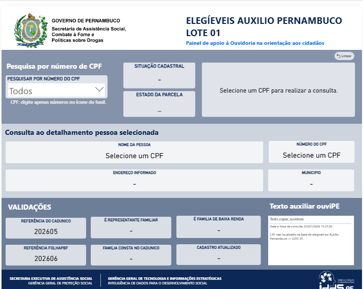
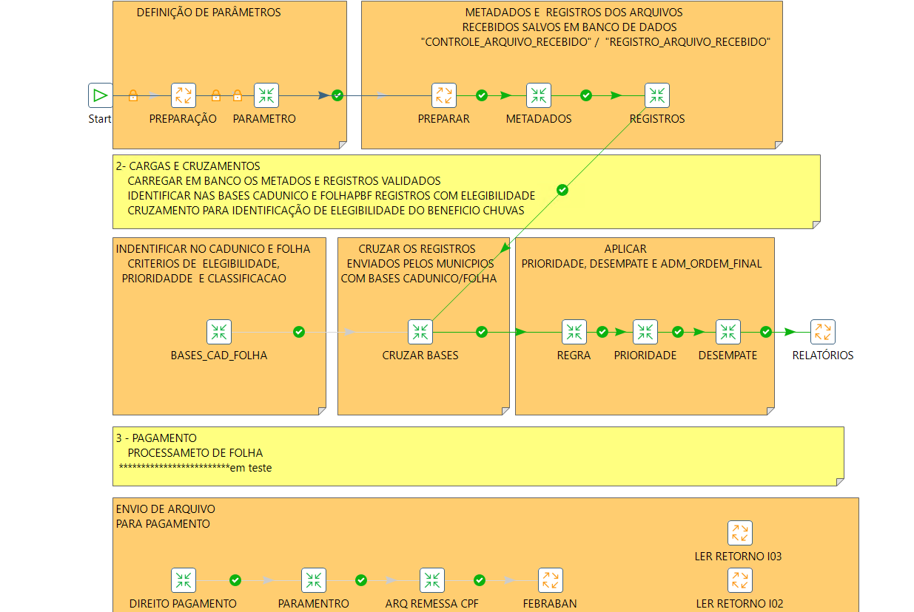
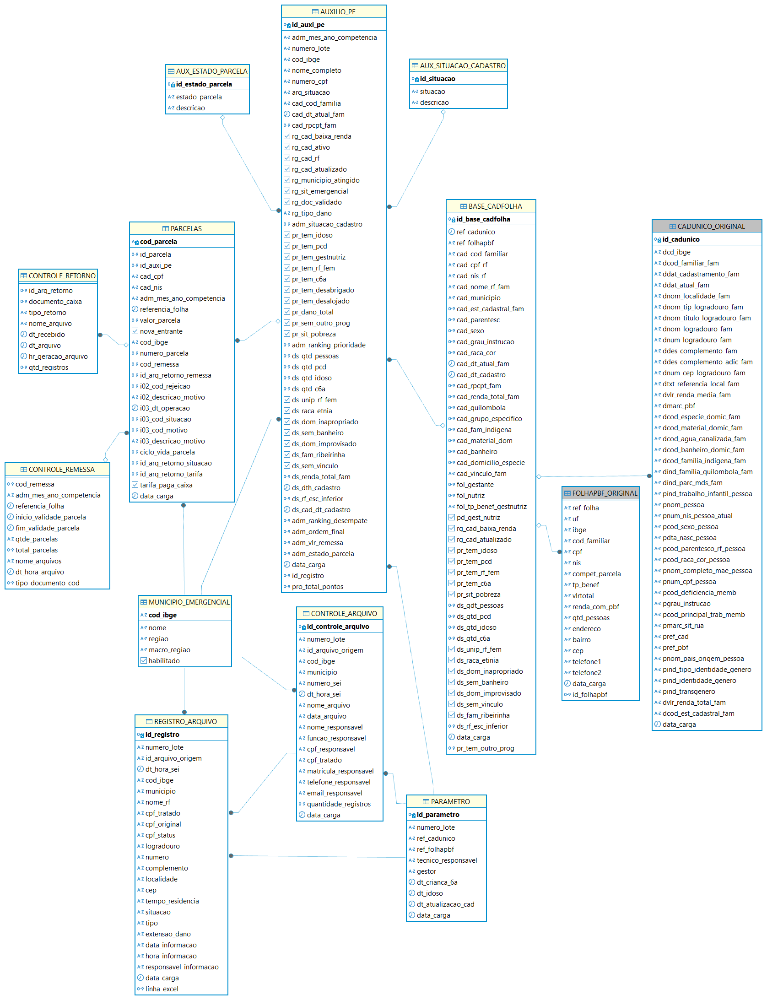
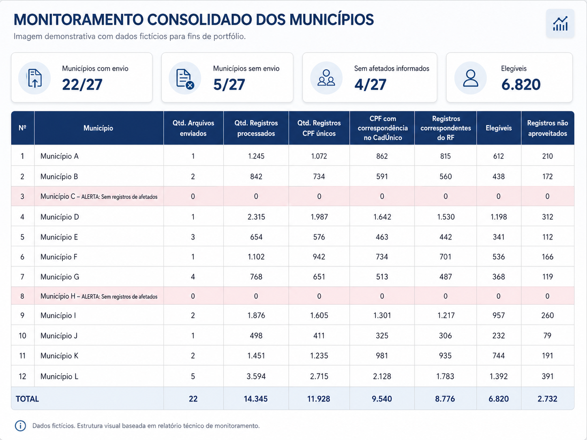
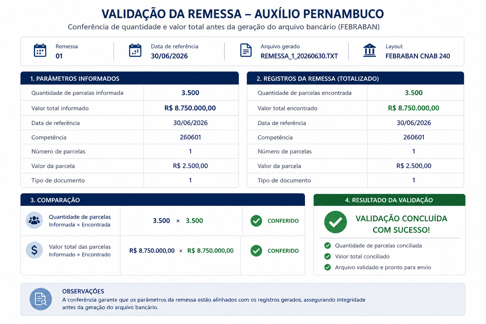

Qualidade dos dados
Os arquivos podiam apresentar campos incompletos, formatos divergentes, CPFs inválidos, registros duplicados e diferenças de preenchimento entre os municípios.
Estudo de caso • Dados • BI • Automação
Plataforma integrada para recebimento, tratamento, cruzamento, elegibilidade, priorização, monitoramento e preparação do pagamento de benefícios.
01 • Contexto
O projeto foi estruturado para receber arquivos enviados pelos municípios, verificar a qualidade das informações, integrar diferentes bases cadastrais, aplicar as regras do programa e produzir dados confiáveis para gestão, atendimento e pagamento.
02 • Desafio
Os arquivos podiam apresentar campos incompletos, formatos divergentes, CPFs inválidos, registros duplicados e diferenças de preenchimento entre os municípios.
Era necessário relacionar os registros municipais às bases cadastrais e à folha de benefícios, preservando a origem, a competência e a rastreabilidade de cada informação.
A solução precisava centralizar critérios de elegibilidade, prioridade, desempate e ordem final, evitando tratamentos manuais e interpretações diferentes.
Além da análise, o processo deveria produzir relatórios gerenciais, apoiar a Ouvidoria e preparar os dados necessários para geração e conferência das remessas de pagamento.
03 • Minha atuação
Leitura, tratamento e padronização dos arquivos recebidos, com geração das bases intermediárias.
Construção de Jobs e transformações para carga, cruzamento, regras, ranking, relatórios e remessas.
Modelagem das tabelas, relacionamentos, índices, validações, triggers e estruturas de rastreabilidade.
Implementação dos critérios obrigatórios, prioridade, desempate e ordenação dos registros.
Desenvolvimento de indicadores, relatórios executivos e painel de consulta para apoio à Ouvidoria.
Produção de documentação técnica, dicionário de dados, testes de carga, validações e evidências de processamento.
04 • Arquitetura
Arquivos XLS/XLSX enviados pelos municípios.
Validação, tratamento e geração de arquivos intermediários.
Orquestração das cargas, cruzamentos e regras.
Armazenamento, integração, análise e rastreabilidade.
Cruzamento com informações cadastrais e folha de benefícios.
Elegibilidade, prioridade, desempate e ordem final.
Produtos gerenciais e suporte ao atendimento.
Conciliação, validação e preparação do arquivo de pagamento.
05 • Resultados
Consolidação e tratamento automatizado de milhares de registros provenientes de diferentes arquivos municipais.
Aplicação uniforme dos critérios de elegibilidade, prioridade e desempate.
Identificação do lote, arquivo, município, linha de origem, competência e etapas do processamento.
Diagnóstico de duplicidades, documentos inválidos, incompletudes e divergências cadastrais.
Relatórios executivos e indicadores para monitoramento dos municípios e dos resultados do programa.
Painel de consulta desenvolvido para subsidiar a Ouvidoria na orientação aos cidadãos.
Preparação, conciliação e validação dos dados utilizados na geração das remessas bancárias.
Registro do fluxo ETL, modelo de dados, regras, dependências, testes e procedimentos operacionais.
06 • Evidências
As imagens abaixo foram selecionadas ou recriadas para demonstrar a arquitetura e os produtos desenvolvidos, sem exposição de dados pessoais ou informações operacionais restritas.

Consulta da situação cadastral, estado da parcela e critérios utilizados para orientação ao cidadão.

Orquestração das etapas de preparação, carga, cruzamento, regras, ranking, relatórios e pagamento.

Estrutura organizada em camadas de ingestão, consolidação, análise, ranking, parcelas e remessas.

Exemplo demonstrativo de acompanhamento dos arquivos, registros, correspondências e resultados por município.

Conciliação da quantidade de parcelas e do valor total antes da geração do arquivo bancário.
Este estudo apresenta uma visão resumida e demonstrativa da solução. Dados pessoais, documentos, credenciais, informações bancárias, caminhos internos e detalhes operacionais restritos foram removidos, anonimizados ou substituídos por dados fictícios.